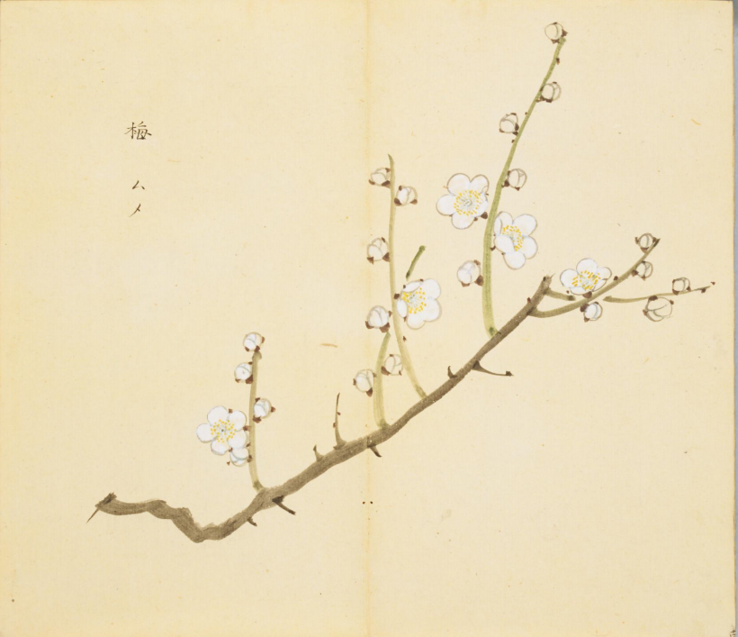
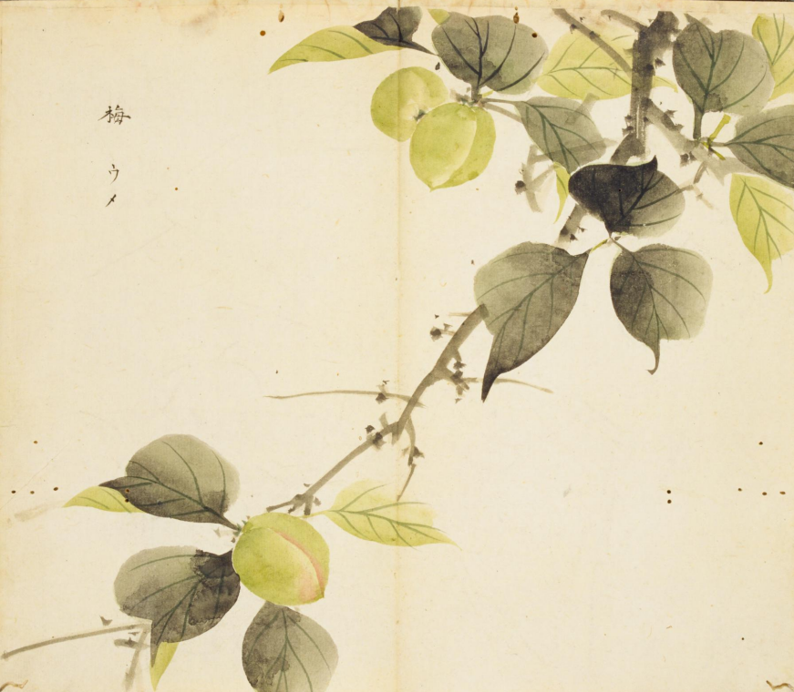

出现篇目
古代记载
《毛诗故训传》
梅，柟也。（《毛传》注《终南》）
《毛诗草木鸟兽虫鱼疏》
梅树皮叶似豫章，叶大如牛耳，一头尖，赤心，华赤黄，子青，不可食。楠叶大，可三四叶一丛，木理细致于豫章，子赤者材坚，子白者材脆。荆州人曰梅，终南及新城、上庸皆多，樟、楠终南与上庸、新城通，故亦有楠也。
《毛诗正义》
“梅，柟”，《释木》文。孙炎曰：“荆州曰梅，杨州曰柟。”郭璞曰：“似杏实酢。”陆机《疏》云：“…梅树皮叶似豫樟，豫樟叶大如牛耳，一头尖，赤心，华赤黄，子青，不可食。柟叶大，可三四叶一丛。木理细致于豫樟，子赤者材坚，子白者材脆。江南及新城、上庸、蜀皆多樟柟，终南山与上庸、新城通，故亦有柟也。”（《毛诗正义》疏《终南》）
《诗集传》
梅、木名。華白、實似杏而酢（《诗集传》集注《摽有梅》）
《本草纲目》
"《别录》曰∶梅实生汉中山谷。五月采实，火干。
颂曰∶今襄汉、川蜀、江湖、淮岭皆有之。
时珍曰∶按∶陆玑《诗疏》云∶梅，杏类也。树、叶皆略似杏，叶有长尖，先众木而花。其实酢，曝干为脯，入羹臛齑中，又含之可以香口。子赤者材坚，子白者材脆。
范成大《梅谱》云∶江梅，野生者，不经栽接，花小而香，子小而硬。消梅，实圆松脆，多液无滓，惟可生啖，不入煎造。绿萼梅，枝跗皆绿。重叶梅，花叶重叠，结实多双。红梅，花色如杏。杏梅，色淡红，实扁而斑，味全似杏。鸳鸯梅，即多叶红梅也，一蒂双实。
一云∶苦楝接梅，则花带黑色。
谭子化书云∶李接桃而本强者其实毛，梅接杏而本强者其实甘。梅实采半黄者，以烟熏之为乌梅；青者盐腌曝干为白梅。亦可蜜煎、糖藏，以充果饤。熟者笮汁晒收为梅酱惟乌梅、白梅可入药。梅酱，夏月可调渴水饮之。"
当代记载 《中国植物志》
"梅（Prunus mume）蔷薇科，李属植物。小乔木，稀灌木，高4-10米；树皮浅灰色或带绿色。叶片卵形或椭圆形。花单生或有时2朵同生于1芽内，香味浓，先于叶开放。花瓣倒卵形，白色至粉红色。花期冬春季，果期5-6月（在华北果期延至7-8月）。我国各地均有栽培，但以长江流域以南各省最多，江苏北部和河南南部也有少数品种，某些品种已在华北引种成功。日本和朝鲜也有。 梅原产我国南方，已有三千多年的栽培历史，无论作观赏或果树均有许多品种。许多类型不但露地栽培供观赏，还可以栽为盆花，制作梅桩。鲜花可提取香精，花、叶、根和种仁均可入药。果实可食、盐渍或千制，或熏制成乌梅人药，有止咳、止泻、生津、止渴之效。梅又能抗根线虫危害，可作核果类果树的砧木。"

<细井徇>

<细井徇>